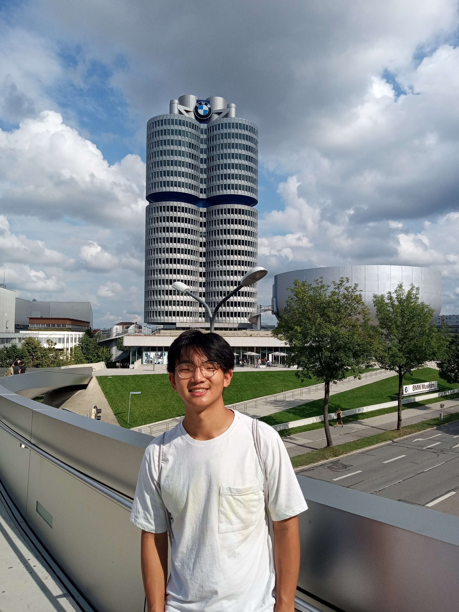

Hi 🌊! I'm a fifth-year PhD student in UC San Diego's CS Theory Group where I am very lucky to work with Barna Saha and Russell Impagliazzo. I am interested in algorithm design, fine-grained complexity, as well as computational complexity and learning theory. Before that, I received my undegraduate degree in mathematics from Princeton in 2021, where I was fortunate to work with Gillat Kol.
Hi 🌊! I'm a fifth-year PhD student in UC San Diego's CS Theory Group where I am very lucky to work with Barna Saha and Russell Impagliazzo. I am interested in algorithm design, fine-grained complexity, as well as computational complexity and learning theory. Before that, I received my undegraduate degree in mathematics from Princeton in 2021, where I was fortunate to work with Gillat Kol.
During the summer of 2026, I had the pleasure of working with Mina Dalirrooyfard at the Morgan Stanley ML Research Group. From 2021 to 2022, I worked as a Quantitative Analyst in the Securitized Products Group at Morgan Stanley. I also completed an internship with the AI Infrastructure Group at aidoc during the summer of 2019.
When not at the office, I enjoy swimming, baking, and exploring the outdoors.
You can reach me at czye (at) ucsd (dot) edu
Thank you to Sharon for giving me the template to her personal website.
| [{{ item.dates }}] | {{ item.text }} |